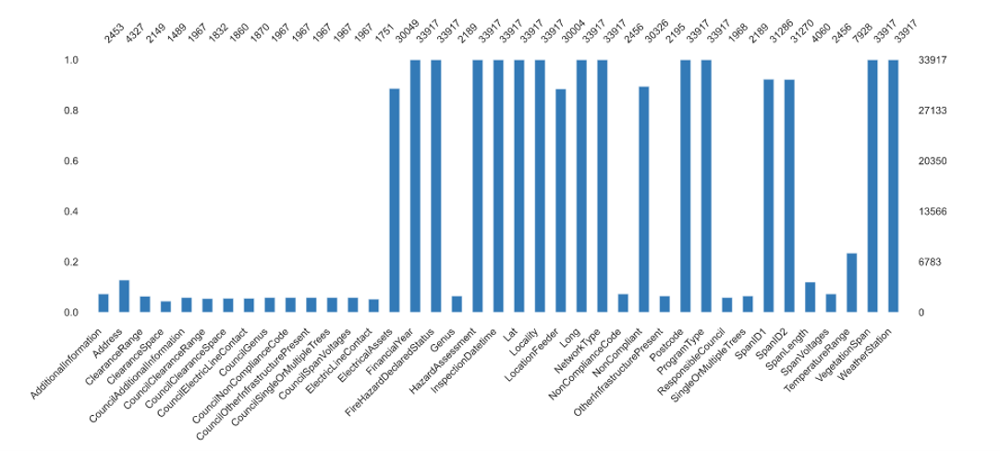
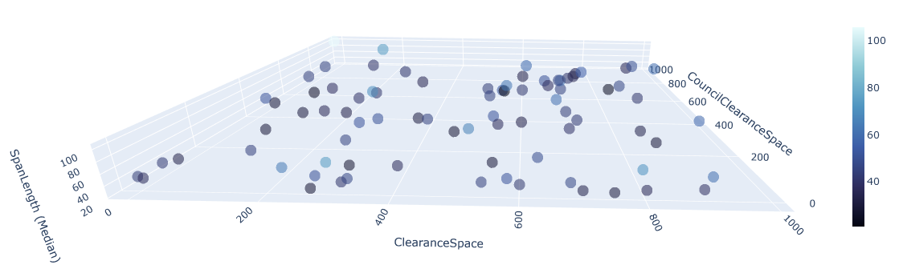
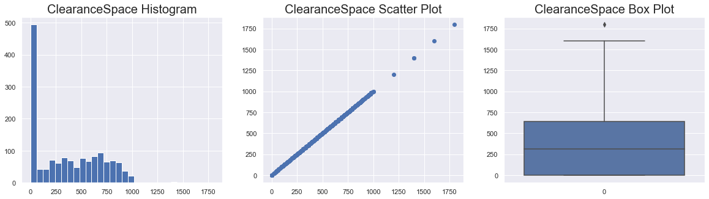
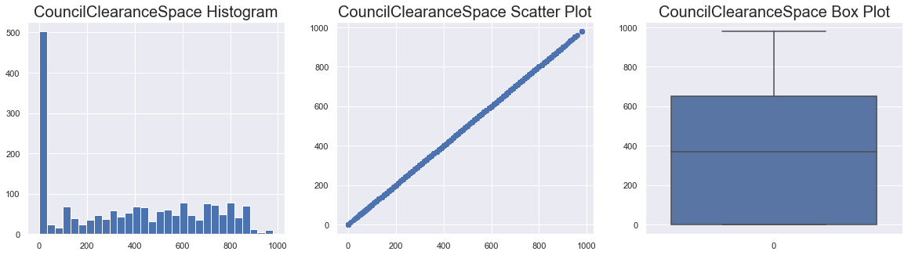
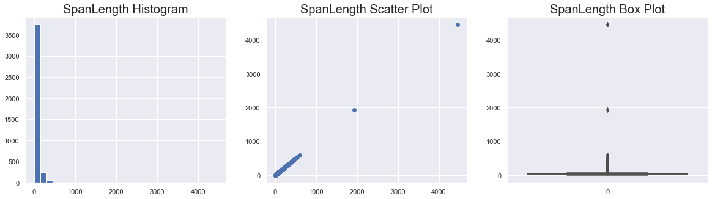

Data Visualization

The solid lines in the column chart represent the number of values present in each column of the dataset.
The numerical type variables Clearance Space, Council Clearance Space, and Span Length have no relation among them.
The data is right skewed and has a few outliers.
The data is distributed and has no outliers.
The data is highly right skewed with short span, and contains extreme outliers.
